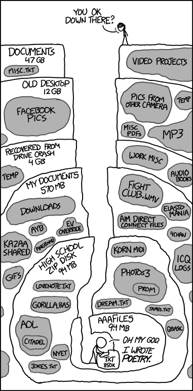

2 Open Science for collaboration
2.1 Lesson Outline
2.2 Goals and motivation
This is the second module in our four hour workshop on open science. This module will explore some open science tools to help you and your team become better collaborators and to better engage your science with external partners. We’ll introduce some essential elements of collaboration and discuss some readily available tools for doing so. We’ll close with a discussion on balancing and managing expectations for collaboration in the rapidly evolving online arena.
- Goal: understand methods of collaboration and the pros/cons of various tools
- Motivation: start building the tools for your open science toolbox
2.3 Essential elements of collaboration
We start our deep dive into open science by focusing on collaboration as the single most important activity that can be enhanced through transparent, efficient, and reproducible tools. Having effective tools to work together is a critical theme of many open science practices. There are many tools in the toolbox and we need to introduce some core concepts before we demonstrate how to implement them in practice.
2.3.1 Workflow management
How do you organize your work each day? How do you make sure pressing deadlines are met on schedule? How do you plan for short-term and long-term goals? Do you have a five-year, ten-year, or longer career plan?
Work to achieve goals cannot be accomplished without a systematic approach to organizing tasks. Chances are, we each have our own system that works for us that was developed through trial and error. Although everyone has familiar workflows, they are often idiosyncratic and deeply entrenched by habit. That can be in direct conflict with collaboration when we try to mesh internal workflows with those of others.
Does this look familiar?

Although the above comic from xkcd speaks directly to file management, it hints at a broader problem of personal information management that can seriously complicate working with others. I’m sure we’ve all struggled to find that one file for that one project from a vague recollection of seeing it a few months ago.
Collaborative work can be facilitated through workflow management that helps you break out of old habits. We’ll introduce some specific internet-based tools below to facilitate workflows either for yourself or, better yet, working with others. These can help propel you towards open science.
Here, we introduce the Kanban approach to workflow management. The idea is simple. Create a task-oriented workflow of card management organized by progress. It looks something like this:

As shown, this approach can work as a literal, physical board or as one used digitally through a web browser or other software. Every Kanban board has the following elements that allow you to work in a more informed manner:
- Provides a “big picture” of progress
- Organizes progress by discrete steps
- Establishes cards as specific tasks
Many of the open science tools we describe below use this system. It is a generalizable format that works in different settings, whether it be general project management or something more formal like software development.
2.3.2 Version control
A specific problem for workflow management that can be solved by open science tools is file management. Workflows can greatly be enhanced by tools that use strict guidelines for tracking changes and allowing a complete view of the evolution of a project. This is where version control comes in.
I’m sure many of you have fallen into this trap:

Version control is a way to track the development history of a project. It serves the joint purposes of:
- Formally documenting the changes that have been made to code or software
- Making sure that the development history is permanent
- Providing a system for collaborating across platforms (with friends!)
It’s more than saving files. Documenting changes with a set of commands that follow strict rules provides a transparent record for yourself and others, and establishing permanency ensures that any of the changes that are made can be vetted and accessed as needed. Think of it as an insurance plan for your project.
By far, the most widely use software for version control is Git. Although we do not cover the specifics of this software, it’s useful to understand the purpose and what it can do in making your work more open and impactful. Git is integrated with many popular open source development platforms, such as RStudio.
Many people often confuse Git with GitHub. GitHub is an online platform for working collaboratively through Git AND it allows you to be open with your work. We’ll provide some examples below of how this can be done. Importantly, you do not need to be an expert in Git to be able to use GitHub. This speaks volumes for how team efficiency can be improved through better collaboration.
Watch and learn
Now we’ll demonstrate how to setup a version control project with RStudio, Git, and GitHub.
2.3.3 Data repositories
How data are treated as living, dynamic pieces of information is critical to the whole ethos of open science. This is especially true when the FAIR principles are invoked. Data should not live on your hard drive as something only known to yourself.
Although we will not cover data repositories in depth, it’s important to recognize the critical role that data archiving and metadata have in open science. How many times have you thought “wow, it would be great if I could have the data from this paper!” Making data open is a great way to propel science through better collaboration.
The ease of getting a dataset online depends on where you want to put the data. In all cases, your dataset should be tidy and accompanied by metadata. For simple solutions, such as FTP hosting or putting a dataset on Google Drive, all you need to do is upload the data by hand. However, this doesn’t necessarily make it findable and the permanency is uncertain.
The absolute best standard for hosting data online is through a Federated Data Repository:
An online network of connected repositories that use similar standards to collectively store data for discovery and access. Uploading a dataset to one node of a repository will make it available through all other nodes.
Such repositories follow strict, but necessary guidelines, to ensure your data live forever so long as the internet exists. The data are definitely findable (e.g., through a web search), accessible (free to download), and interoperable (accepted standards are ensured). The “reproducible” aspect can be debatable, but that can be solved through other means (e.g., code sharing).
Some examples of data repositories, most are domain-specific:
- KNB: Knowledge Network for Biocomplexity, a general purpose repository for ecological data
- HydroShare: Data and models used in hydrology
- OPC: California Ocean Protection Council, marine and coastal datasets
2.3.4 Code of Conduct
Every great collaborative team does not begin work before a Code of Conduct is created. This documents a set of community and social standards within which the work can be completed. It ensures all viewpoints are heard and respected and establishes a means by which conflicts can be resolved.
Here’s a great example from our friends at openscapes.
The goal of every code of conduct is to ensure an agreed upon set of norms are used by all team members to help create a safe and positive experience.
Exercise
Develop a code of conduct for your group in a shared workspace. Items to consider:
- How is inclusion defined and encouraged?
- How are similarities and differences recognized?
- How will conflicts be managed?
2.4 Tools for collaboration
Now we introduce some specific web-based tools that you can use to improve collaboration and openness. We present them as a suite of options to consider based on the pros and cons associated with each tool. This is by no means a comprehensive list, but it should get you started towards better collaboration to leverage open science.
2.4.1 Slack
What
An online messaging platform for internal communication. Conversations can be organized by topic (via channels) or you can send direct messages to one or more team members. You can have multiple workspaces for different groups.
Pros
Alleviate email overload through quick, informal messaging. Offers a fresh approach to online communication.
Cons
Yet another thing to monitor. Free subscription limits archive of messages. Communication is limited to only those individuals in a workspace.
2.4.2 Trello

What
A Kanban style workflow organization platform. Can be used for personal organization or in teams.
Pros
Easy to use and can upgrade with “power-ups” for integration with other services (e.g., Google).
Cons
Only visible to yourself or those you explicitly invite. Free version is limited.
2.4.3 Google Drive
What
Cloud-based Platform for sharing documents, worksheets, slides, etc. Requires a Google username.
Pros
Easy to use and can be a very open space for collaboration. Fairly interoperable with different file formats. Some functionality with version control (i.e., ability to “roll-back” to previous versions and to view changes).
Cons
Access can be tricky depending on institution. Who knows what Google is doing with your data.
2.4.4 Office 365

What
Cloud-based Platform for sharing Microsoft documents, worksheets, slides, etc. Requires a Microsoft account.
Pros
Easy to use and fully supports Microsoft products.
Cons
Access can be tricky depending on institution. Maintains dependency on expensive Microsoft products that don’t facilitate reproducibility.
2.4.5 GitHub

What
Cloud-based Platform for sharing code with Git version control. Supports sharing of most file types, although code and text-based files are the primary use.
Pros
Collaborative and fully transparent work environment for files under version control. Supports workflow management through issue tracking and Kanban style project boards. Octocat mascot is super cute.
Cons
Learning curve is steep if you want to fully leverage version control. Not a formal data archival service and file sizes are limited.
Watch and learn
Setting up a project management system with GitHub.
Exercise
In small groups, setup a shared workspace using one of the collaborative platforms.
2.5 Balancing and managing expectations
Adopting new workflows and tools to facilitate collaboration are steps in the right direction for open science. Clearly, change from established norms and practices is not easy. It’s important to develop a realistic expectation of how this change may play out in the wild.
First, realize that these changes are not going to happen overnight. Breaking free of entrenched workflows is like quitting bad habits. It’s not easy because they’re comfortable, familiar, and often habitual. Start small and work gradually towards adopting new ideas. Incremental progress is the name of the game.
Getting others on board is another serious challenge. The sources of frustration you might have at the personal level apply to anyone else working in your team. Even more so, institutional roadblocks may exist. New software can raise red flags for IT support staff. It’s important to work with them to develop trust for the software and an accepted process for installation.
Finally, the tools above are temporary. The single constant in open science is change. Use the tools with full realization that they may be appropriate for now, but something (hopefully) better will replace it in the future.